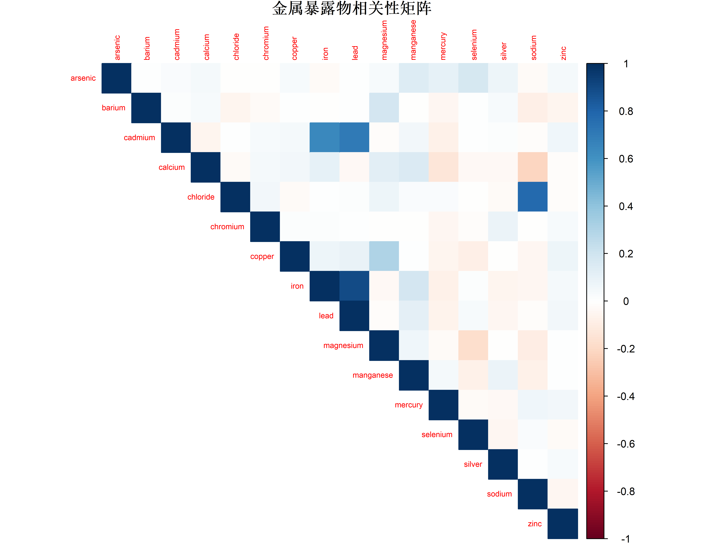
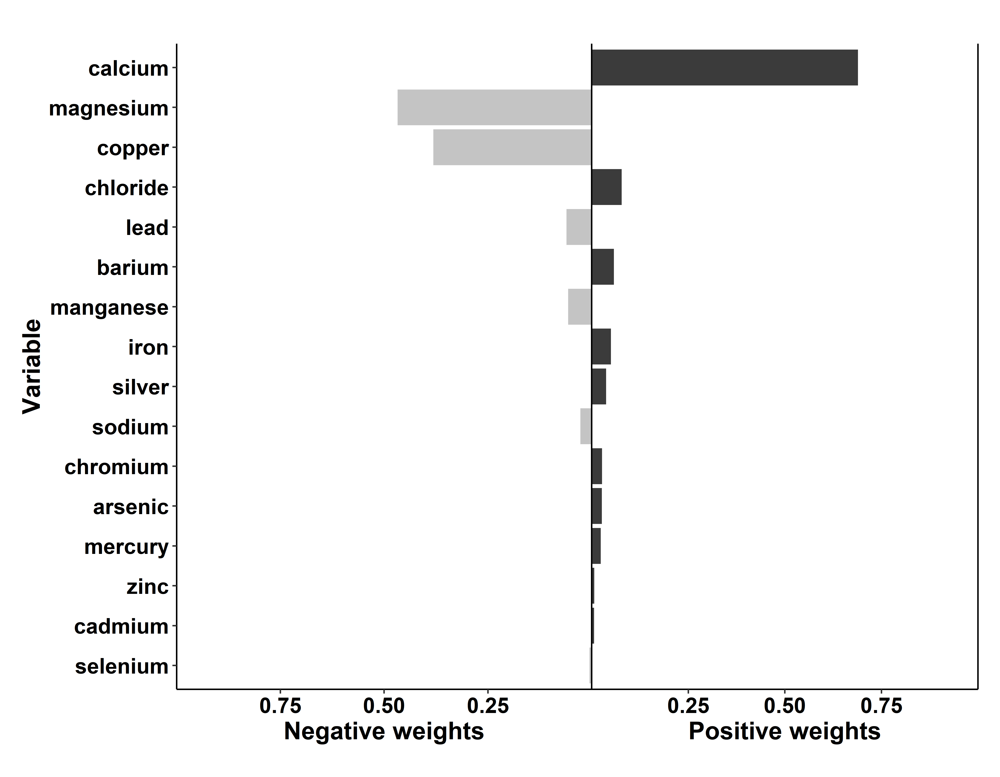
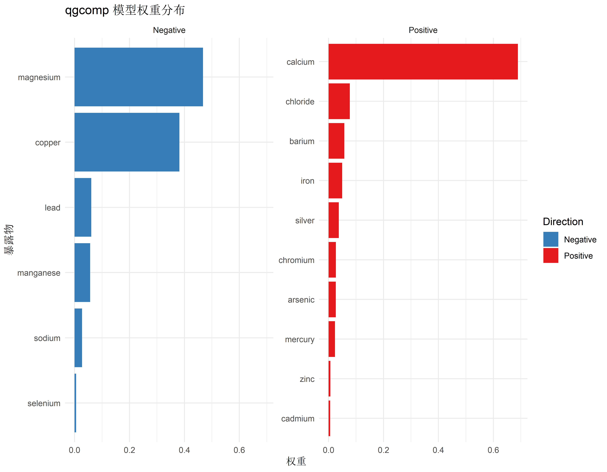
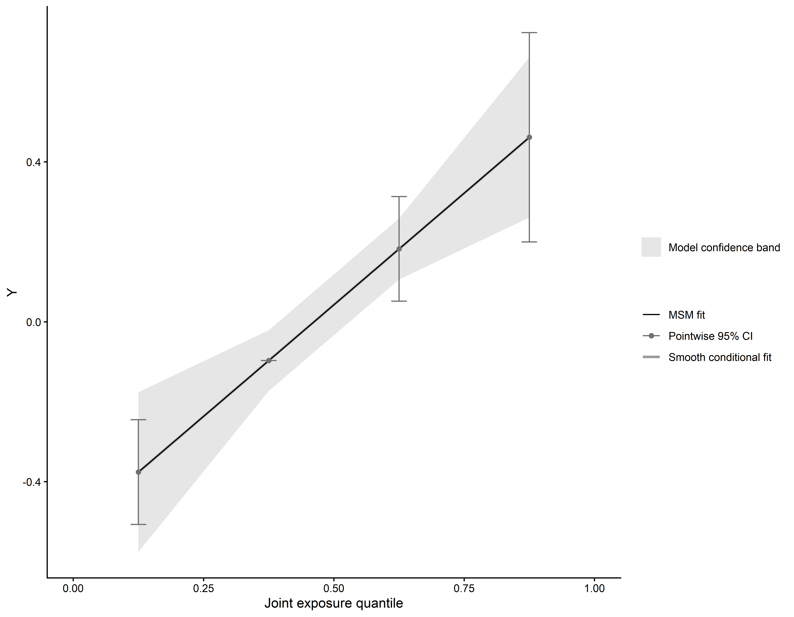

install.packages("qgcomp")分位数 G-计算 (qgcomp) 完全指南
特殊应用
环境流行病学
R包
混合暴露
基于因果推断框架的混合暴露分析方法：如何评估同时存在正向和负向效应的混合暴露对健康结局的总体影响。
为什么需要 qgcomp？
在混合暴露分析中，我们已经介绍了 WQS (Weighted Quantile Sum) 回归。虽然 WQS 是处理多重共线性的有力工具，但它有一个关键限制：假设所有暴露物的作用方向一致（要么都有害，要么都有益）。
然而，在现实世界中，混合暴露往往更加复杂： 1. 双向效应：某些暴露物可能是有害的（如重金属），而另一些可能是保护性的（如某些微量元素）。 2. 数据利用率：WQS 需要将数据分割为训练集和验证集，降低了统计效能。 3. 线性假设：传统模型往往假设暴露与结局呈线性关系。
分位数 G-计算 (Quantile G-computation, qgcomp) 是 Alexander Keil 等人提出的一种基于因果推断框架（G-computation）的方法。它结合了 WQS 的易解释性和 G-computation 的灵活性，能够： - 允许暴露物具有不同方向的效应 - 不需要分割数据（统计效能更高） - 估计混合暴露的总体因果效应
qgcomp 方法原理
qgcomp 的核心思想是将混合暴露的总体效应视为“如果所有暴露物同时增加一个分位数单位，结局变量的期望变化”。
核心步骤
- 分位数转换：与 WQS 类似，将每个连续暴露变量转换为分位数得分（0, 1, 2, 3 等）。
- 模型拟合：拟合一个包含所有分位数化暴露变量的广义线性模型（GLM）。
- 效应估计：基于模型系数，计算混合暴露的总体效应（\(\psi\)）。
数学模型
假设我们有 \(k\) 个暴露物 \(X_1, ..., X_k\) 和协变量 \(Z\)。
标准线性 qgcomp 模型为：
\[Y = \beta_0 + \sum_{j=1}^{k} \beta_j X_j^{(q)} + \gamma Z + \epsilon\]
其中 \(X_j^{(q)}\) 是第 \(j\) 个暴露物的分位数得分。
- 混合暴露总体效应 (\(\psi\))：所有暴露物系数之和 (\(\psi = \sum \beta_j\))。它表示所有暴露物同时增加一个分位数单位时，结局的变化量。
- 权重：第 \(j\) 个暴露物的权重为 \(w_j = \beta_j / \sum |\beta_j|\)（正权重）或类似定义。
qgcomp vs. WQS
| 特性 | WQS | qgcomp |
|---|---|---|
| 方向假设 | 单向（全部正向或全部负向） | 双向（允许混合） |
| 数据分割 | 需要（训练/验证） | 不需要 |
| 计算速度 | 较慢（Bootstrap） | 极快（标准 GLM） |
| 推断框架 | 关联分析 | 因果推断（G-comp） |
安装与加载
library(qgcomp)
library(ggplot2)
library(dplyr)数据准备与探索
我们将使用 qgcomp 包自带的 metals 数据集，该数据集模拟了金属暴露与健康结局的关系。
data("metals", package = "qgcomp")
# 查看数据结构
dim(metals)[1] 452 26head(metals) arsenic barium cadmium calcium chloride chromium
1 0.09100165 0.08166362 15.0738845 -0.7746662 -0.15408335 -0.05589104
2 0.17018302 -0.03598828 -0.7126486 -0.6857886 -0.19605499 -0.03268488
3 0.13336869 0.09934014 0.6441992 -0.1525231 -0.17511844 -0.01161098
4 -0.52570747 -0.76616263 -0.8610256 1.4472733 0.02552401 -0.05173287
5 0.43420529 0.40629920 0.0570890 0.4103682 -0.24187403 -0.08931824
6 0.71832662 0.19559582 -0.6823437 -0.8931696 -0.03919936 -0.07389407
copper iron lead magnesium manganese mercury
1 1.99438050 19.1153352 21.072630908 -0.5109546 2.07630966 -1.20826726
2 -0.02490169 -0.2039425 -0.010378362 -0.1030542 -0.36095395 -0.68729723
3 0.25700811 -0.1964581 -0.063375935 0.9166969 -0.31075240 0.44852503
4 0.75477075 -0.2317787 -0.002847991 2.5482987 -0.23350205 0.20428158
5 -0.09919923 -0.1698619 -0.035276281 -0.5109546 0.08825996 1.19283834
6 -0.05622285 -0.2129300 -0.118460981 -1.0059145 -0.30219838 0.02875033
nitrate nitrite ph selenium silver sodium
1 1.3649492 -1.0500539 -0.7125482 0.23467592 -0.8648653 -0.41840695
2 -0.1478382 0.4645119 0.9443009 0.65827253 -0.8019173 -0.09112969
3 -0.3001660 -1.4969868 0.4924330 0.07205576 -0.3600140 -0.11828963
4 0.3431814 -0.6992263 -0.4113029 0.23810705 1.3595205 -0.11828963
5 0.0431269 -0.5041390 0.3418103 -0.02359910 -1.6078044 -0.40075299
6 -0.3986575 0.1166249 1.2455462 -0.61186017 1.3769466 1.83722597
sulfate total_alkalinity total_hardness zinc mage35 y
1 -0.1757544 -1.31353389 -0.85822417 1.0186058 1 -0.6007989
2 -0.1161359 -0.12699789 -0.67749970 -0.1509129 0 -0.2022296
3 -0.1616806 0.42671890 0.07928399 -0.1542524 0 -1.2164116
4 0.8272415 0.99173604 1.99948142 0.1843372 0 0.1826311
5 -0.1726845 -0.04789549 0.30518957 -0.1529379 0 1.1760472
6 -0.1385631 1.98616621 -1.07283447 -0.1290391 0 -0.4100912
disease_time disease_state
1 6.168764e-07 1
2 4.000000e+00 0
3 4.000000e+00 0
4 4.000000e+00 0
5 1.813458e+00 1
6 2.373849e+00 1数据集包含： - y：连续型结局变量 - disease_state：二分类结局变量 - arsenic, barium, cadmium 等：金属暴露物 - mage35 (母亲年龄>35) 等：协变量
# 定义混合暴露变量列表 (移除 metals 数据集中不存在的 strontium)
mixture_vars <- c("arsenic", "barium", "cadmium", "calcium", "chloride",
"chromium", "copper", "iron", "lead", "magnesium",
"manganese", "mercury", "selenium", "silver", "sodium",
"zinc")
# 检查暴露物相关性
cor_matrix <- cor(metals[, mixture_vars])
library(corrplot)
corrplot(cor_matrix, method = "color", type = "upper", tl.cex = 0.6,
title = "金属暴露物相关性矩阵", mar = c(0,0,1,0))
线性 qgcomp 模型（连续结局）
首先，我们分析金属混合暴露对连续结局 y 的影响。
set.seed(42)
# 拟合 qgcomp 线性模型
qc_linear <- qgcomp.noboot(
y ~ . + .^2, # 公式（支持交互项）
data = metals[, c("y", mixture_vars)], # 仅包含结局和暴露的数据子集
expnms = mixture_vars, # 暴露变量名列表
q = 4, # 四分位数
family = gaussian() # 连续结局
)
# 更常用的调用方式（包含协变量）
# 注意：qgcomp.noboot 假设公式中列出的所有非 expnms 变量都是协变量
# 使用正确的协变量名 mage35
qc_linear_adj <- qgcomp.noboot(
y ~ mage35 + arsenic + barium + cadmium + calcium + chloride +
chromium + copper + iron + lead + magnesium + manganese +
mercury + selenium + silver + sodium + zinc,
data = metals,
expnms = mixture_vars,
q = 4,
family = gaussian()
)
# 查看结果摘要
qc_linear_adjScaled effect size (positive direction, sum of positive coefficients = 0.4)
calcium chloride barium iron silver chromium arsenic mercury
0.68937 0.07752 0.05750 0.04958 0.03721 0.02680 0.02613 0.02350
zinc cadmium
0.00643 0.00596
Scaled effect size (negative direction, sum of negative coefficients = -0.12)
magnesium copper lead manganese sodium selenium
0.46764 0.38165 0.06089 0.05686 0.02747 0.00549
Mixture slope parameters (delta method CI):
Estimate Std. Error Lower CI Upper CI t value Pr(>|t|)
(Intercept) -0.380479 0.108901 -0.59392 -0.16704 -3.4938 0.0005250
psi1 0.279174 0.072106 0.13785 0.42050 3.8717 0.0001247结果解读
输出结果中最关键的部分是 Mixture slope parameters：
- Psi1 (\(\psi\))：混合暴露的总体效应。
- 值为 0.279 (示例值)。
- 解释：当所有金属暴露物同时增加一个四分位数等级时，结局
y平均变化 \(\psi\) 个单位。 - P 值表示该效应是否显著。
- Weights：各暴露物的权重。
- Positive weights：与结局正相关的暴露物的相对贡献。
- Negative weights：与结局负相关的暴露物的相对贡献。
# 提取系数和统计量
summary(qc_linear_adj)Mixture slope parameters (delta method CI):$coefficients
Estimate Std. Error Lower CI Upper CI Pr(>|t|)
(Intercept) -0.3804786 0.10890087 -0.5939204 -0.1670368 0.0005249854
psi1 0.2791738 0.07210632 0.1378480 0.4204996 0.0001246725结果可视化
qgcomp 提供了一套绘图函数来展示权重。
# 绘制权重图
plot(qc_linear_adj)
解读： - 图表分为左右两部分（或不同颜色）：正向权重（增加结局值）和负向权重（减少结局值）。 - 每一侧的权重之和通常标准化为 1（或分别展示）。 - 我们可以清楚地看到哪些金属是危险因素（正效应），哪些是保护因素（负效应）。
为了获得更美观的 ggplot2 风格图表，我们可以提取数据自己绘制：
# 提取权重数据
weights_df <- data.frame(Var = character(), Weight = numeric(), Direction = character())
if(length(qc_linear_adj$pos.weights) > 0){
weights_df <- rbind(weights_df, data.frame(
Var = names(qc_linear_adj$pos.weights),
Weight = as.numeric(qc_linear_adj$pos.weights),
Direction = "Positive"
))
}
if(length(qc_linear_adj$neg.weights) > 0){
weights_df <- rbind(weights_df, data.frame(
Var = names(qc_linear_adj$neg.weights),
Weight = as.numeric(qc_linear_adj$neg.weights),
Direction = "Negative"
))
}
# 绘图
ggplot(weights_df, aes(x = reorder(Var, Weight), y = Weight, fill = Direction)) +
geom_bar(stat = "identity") +
coord_flip() +
facet_wrap(~Direction, scales = "free_y") + # 改为 free_y 以适应不同数量的变量
labs(title = "qgcomp 模型权重分布", x = "暴露物", y = "权重") +
theme_minimal() +
scale_fill_manual(values = c("Positive" = "#E41A1C", "Negative" = "#377EB8"))
Logistic qgcomp 模型（二分类结局）
对于二分类结局（如疾病发生与否），我们使用 family = binomial()。这里使用 disease_state 作为结局。
set.seed(42)
# 拟合 Logistic qgcomp 模型
qc_logistic <- qgcomp.noboot(
disease_state ~ mage35 + arsenic + barium + cadmium + calcium + chloride +
chromium + copper + iron + lead + magnesium + manganese +
mercury + selenium + silver + sodium + zinc,
data = metals,
expnms = mixture_vars,
q = 4,
family = binomial()
)
qc_logisticScaled effect size (positive direction, sum of positive coefficients = 0.437)
barium zinc chromium chloride magnesium silver
0.3183 0.1620 0.1580 0.1393 0.1378 0.0846
Scaled effect size (negative direction, sum of negative coefficients = -0.659)
selenium copper calcium manganese arsenic mercury lead iron
0.30786 0.17777 0.13543 0.09951 0.09519 0.08396 0.04726 0.03639
sodium cadmium
0.00947 0.00715
Mixture log(OR) (delta method CI):
Estimate Std. Error Lower CI Upper CI Z value Pr(>|z|)
(Intercept) 0.21190 0.52338 -0.81390 1.23771 0.4049 0.6856
psi1 -0.22198 0.34666 -0.90143 0.45746 -0.6403 0.5219解读： - Psi1：对数几率比 (Log OR)。 - Exp(Psi1)：混合暴露 OR 值。解释：当所有暴露物同时增加一个四分位数等级时，患病风险（Odds）是原来的 exp(psi) 倍。
# 计算 OR 值及 95% CI
psi <- qc_logistic$psi
se <- qc_logistic$var.psi^0.5
or <- exp(psi)
ci_lo <- exp(psi - 1.96 * se)
ci_hi <- exp(psi + 1.96 * se)
cat("混合暴露 OR =", round(or, 3), "( 95% CI:", round(ci_lo, 3), "-", round(ci_hi, 3), ")\n")混合暴露 OR = 0.801 ( 95% CI: 0.406 - 1.58 )允许非线性：qgcomp.boot
上述 qgcomp.noboot 假设效应是线性的（在分位数尺度上）。如果需要检验非线性效应，或者需要更稳健的置信区间，可以使用 qgcomp.boot。
qgcomp.boot 使用 Bootstrap 方法估计边际结构模型（Marginal Structural Model），允许在模型中包含暴露的平方项等来拟合非线性。
# 拟合非线性模型（degree = 2）
# 注意：计算量比 noboot 大
set.seed(42)
qc_boot <- qgcomp.boot(
y ~ mage35 + arsenic + barium + cadmium + calcium + chloride +
chromium + copper + iron + lead + magnesium + manganese +
mercury + selenium + silver + sodium + zinc,
data = metals,
expnms = mixture_vars,
q = 4,
degree = 2, # 二次项，允许非线性
B = 200, # Bootstrap 次数，实际使用建议 >500
family = gaussian()
)
summary(qc_boot)Mixture slope parameters (bootstrap CI):$coefficients
Estimate Std. Error Lower CI Upper CI Pr(>|t|)
(Intercept) -3.757834e-01 1.019772e-01 -5.756550e-01 -1.759117e-01 2.577944e-04
psi1 2.791738e-01 6.679446e-02 1.482591e-01 4.100885e-01 3.536321e-05
psi2 1.317140e-16 1.587778e-16 -1.794848e-16 4.429127e-16 4.072520e-01qgcomp.boot 的结果解读略有不同，它不再提供简单的 \(\psi\) 值，而是提供基于 G-computation 估计的总体效应。我们可以绘制暴露-反应曲线来直观理解。
# 绘制剂量-反应曲线
# qgcomp 包目前没有直接的 plot 函数来画曲线，我们需要用 predict 生成预测值
# 或者使用 pointboxPlot 检查模型拟合
# 下面代码仅为演示 qgcomp.boot 对象的默认绘图
plot(qc_boot) 
高级主题：处理聚类数据
如果数据具有层级结构（例如多中心研究、重复测量），可以使用 qgcomp 的扩展功能（虽然 qgcomp 包主要针对独立数据，但可以通过调整方差估计或使用 bootstrap 适应）。目前 qgcomp 并没有直接支持 lmer 的接口，但可以通过 GEE 或自定义 bootstrap 实现。对于简单的聚类，Bootstrap 方法（qgcomp.boot）通常能提供稳健的标准误。
总结：何时选择 qgcomp？
| 场景 | 推荐方法 | 理由 |
|---|---|---|
| 暴露效应方向未知或混合 | qgcomp | 唯一能自然处理双向效应且无需预筛选的方法 |
| 需要高统计效能 | qgcomp | 不分割数据，利用所有样本 |
| 关注因果解释 | qgcomp | 基于反事实框架，效应定义清晰 |
| 所有暴露物同向 | WQS | WQS 在单向假设成立时表现良好 |
| 高度非线性/交互作用 | BKMR | BKMR 在探索复杂响应面方面更强 |
qgcomp 是目前环境流行病学中处理混合暴露最流行的方法之一，它在灵活性、计算效率和统计性能之间取得了很好的平衡。
参考文献
- Keil, A. P., et al. (2020). A Quantile-Based g-Computation Approach to Addressing the Effects of Exposure Mixtures. Environmental Health Perspectives, 128(4).
- Keil, A. P., et al. (2021). qgcomp: Quantile G-computation. R package version 2.8.0.